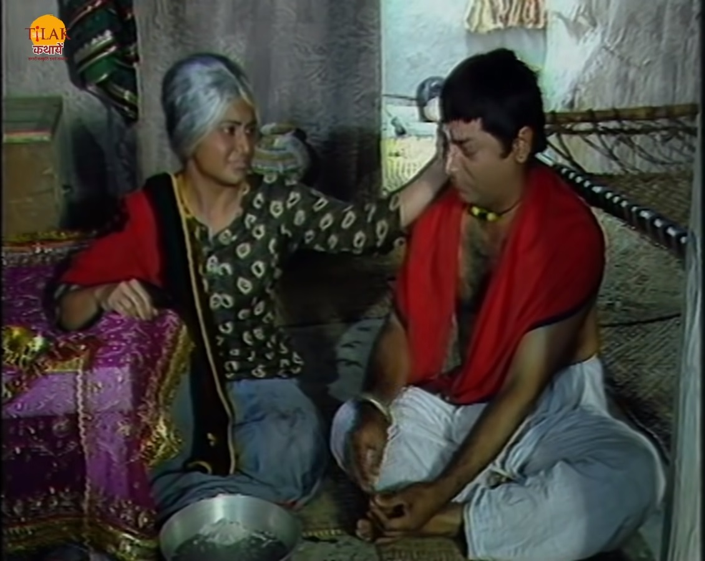
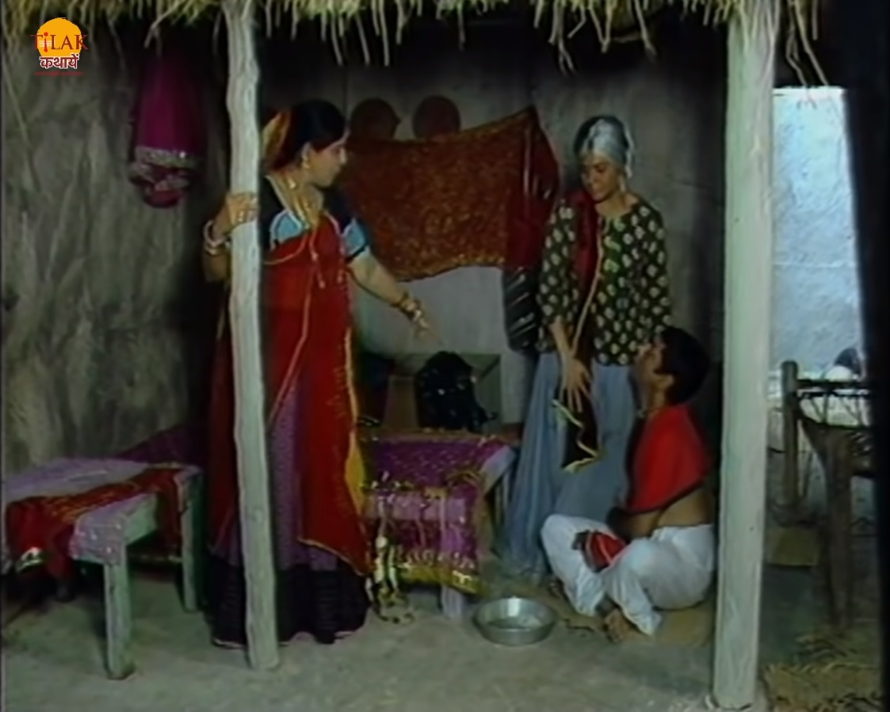
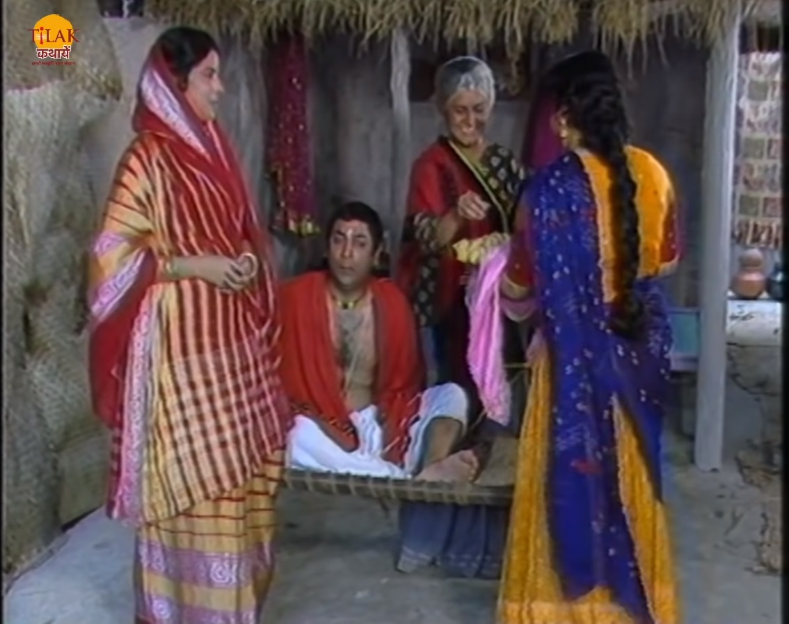
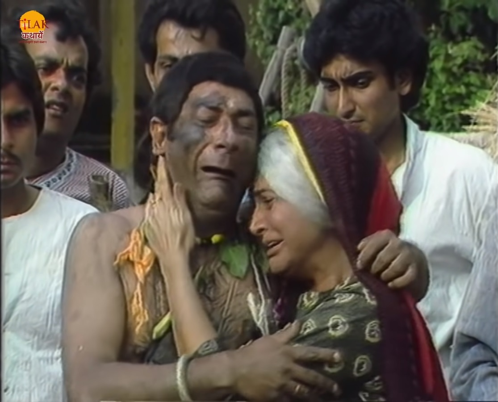
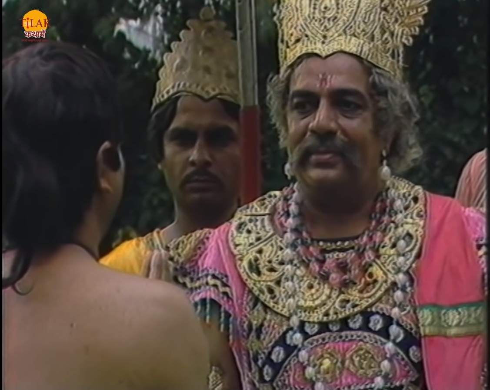
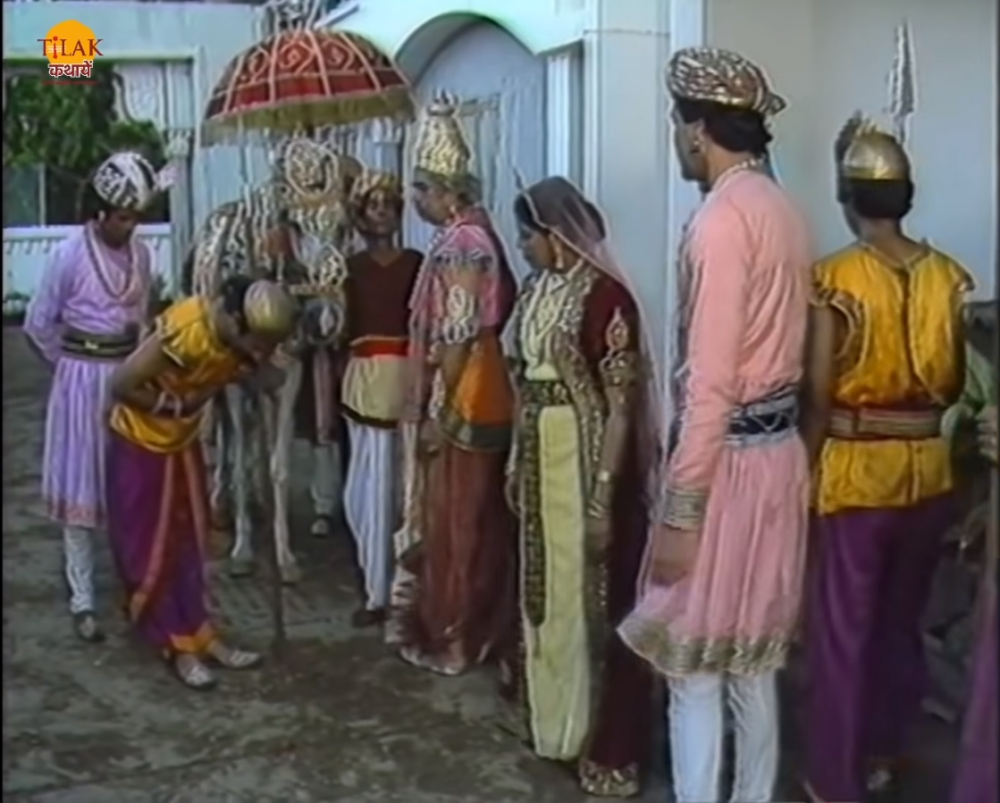

| विक्रम बेताल को फिर से पकड़ कर साथ ले जाता है और बेताल उसे फिर से एक नयी कहानी सुनता है। चंदमपुर में एक बूढ़ी औरत रहती थी जिसका एक बेटा था दगड़ु। दगड़ु की माँ लोगों के नए कपड़ों पर गोटा किनारी लगाकर अपने बेटे और खुद का पेट पलटी थी। दगड़ु कुछ काम नहीं करता था बस सारा दिन खाता और सोते हुए सपने देखता था। एक दिन उसे सपने में दिखायी दिया की एक दूल्हे और दुल्हन को डाकू लूट लेते हैं दगड़ु की माँ उसे कहती है की वो हमेशा ऐसे ही सपने क्यों देखता है जिसमें सबका बुरा हो रहा होता |  | तभी गाँव की एक औरत आती है और दगड़ु की माँ से अपने नए जोड़े माँगती है तो दगड़ु उस औरत से पूछता है की वो किस के लिए ये जोड़े बनवा रही है तो वह औरत उसे बताती है की उसका बेटा अपनी नयी बहु को लेकर आ रहा है। यह सुनकर दगड़ु उसे अपने सपने के बारे में बता देता है जिसे सुन वह औरत उसे कहती है की अगर ऐसा हुआ तो वो उसका पीटकर बुरा हाल कर देगी। जैसा दगड़ु ने कहा वैसा ही होता हिया दगड़ु की वह औरत बहुत पिटाई करवाती है। |
|  | दगड़ु डाक्टर कर उठ जाता है तभी एक औरत दगड़ु की माँ के पास नए घर बनाए की ख़ुशी में के लड्डू बाँटने आयी थी तो दगड़ु उन्हें बताता है की उनका घर तो जल कर रख होने वाला है क्योंकि उसने सपने में ऐसा होते हुए देखा है। दगड़ु के मुँह से यह बात सुनकर वह औरत नाराज़ होकर वहाँ से चली जाती है। उस औरत के घर जल जाता है। दगड़ु को काली ज़ुबान बोलकर गाँव के लोग उसका मुँह कला करके गधे पर बैठा का उसका झुलस निकालते हैं। दगड़ु अपने सच बोलने की बात पर दुःखी होता है और अपने सच बोलने की बात पर रोता है। गाँव वाले उसे गाँव से निकाल देते हैं |  |
| दगड़ु को समझ नहीं आ रहा था की सच इतना कड़वा क्यों होता है। दगड़ु जंगल में भटक रहा था तो आराम करने के लिए वो एक पेड़ के नीचे लेट जाता है और सो जाता है। सोते ही उसे एक ओर सपना आता है उसे सपने में महाराज दिखायी देते है जो उसे अपनी शरण में लेने के लियते आ रहे हैं। तभी उसे सच में महाराज के सैनिक उठते हैं और दगड़ु उनसे मदद माँगता है और काम माँगता है राजा उसे अपने यह रात में पहरा देने के लिए सैनिक रख लेता है। रात में राजा को सोनपुर जाना था इसलिए वो जल्दी ही सो जाते हैं राजा के कक्ष में अंधेरा होते ही दगड़ु भी सो जाता है और उसे सपने में सोनपुर नगर में भूकम्प से तबाही होते हुए दिखाई देती है। |  | अगले दिन सुबह जब राजा सोनपुर के लिए निकलने वाले थे तो दगड़ु उन्हें आगाह कर देता है की वो वहाँ ना जाए क्योंकि वहाँ पर भूकम्प आने वाला है। रानी यह सुनकर राजा को रोक लेती है। अगले दिन राजा को गुप्तचर समाचार सुनता है की सोनपुर में भूकम्प आया है और वहाँ बहुत विनाश हुआ है तो राजा दगड़ु को अपने पास बुलाता है और उसे कहता है की उसे कसी पता चला की सोनपुर में भूकम्प आने वाला है। |
|  | दगड़ु राजा को बताता है की उसे सपने में ये सब दिखाई दिया था और उसके सपने कभी ग़लत नहीं होते हैं। राजा उसे इनाम में हीरो का हार देता है और नौकरी से निकाल देता है। इतनी कहानी सुनकर बेताल राजा विक्रम से पूछता है की राजा ने दगड़ु को हीरों का हर क्यों दिया और फिर नौकरी से क्यों निकल दिया। विक्रम बेताल के प्रश्न का उत्तर देता है की राजा ने दगड़ु को इनाम इसलिए दिया क्योंकि उसकी वजह से उनकी जान बच गयी थी और नौकरी से इसलिए निकाल दिया क्योंकि वह पहरेदारी छोड़ कर सो गया था। राज को अहसास हुआ की दगड़ु अपनी नौकरी के प्रीत ईमानदार नहीं है इसलिए उसे निकल दिया। यह सुन कर बेताल फिर से विक्रम के कंधे से उड़कर वापस अपने पेड़ पर जाकर लटक जाता है। |  |
| Previous Story | Home | Next Story |